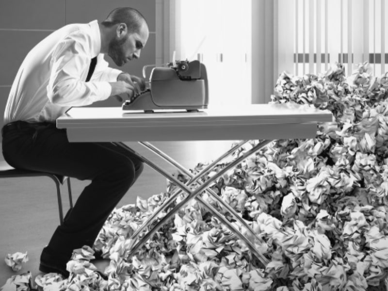
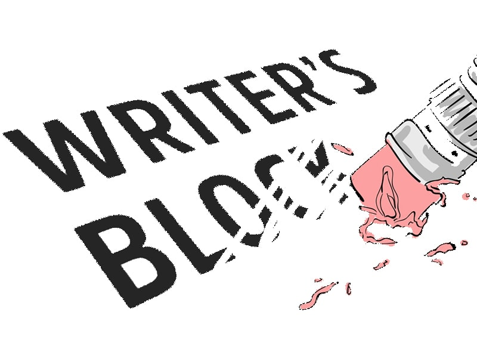
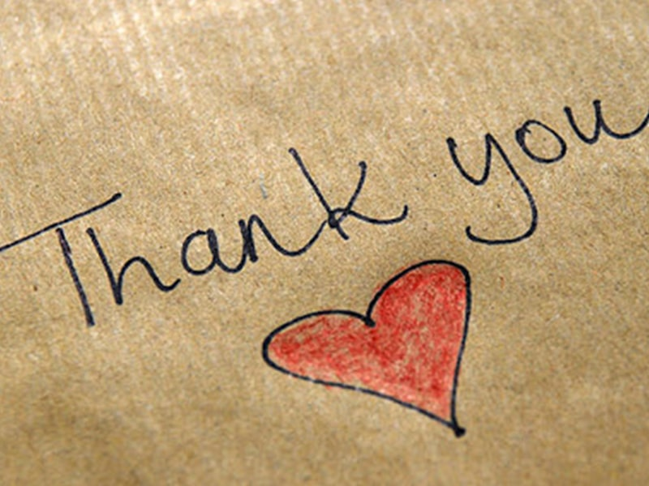

I was one of the lucky souls, who could whip out a writing pad and write whatever thought I processed, immediately onto the pad. The keyword being ‘was’. I uploaded my last blog on January 15th, 2021, and I went on another hiatus, but this wasn’t something I wanted. I was forced into this because I could see no direction, I lacked clarity and above all, I lacked inspiration. I am not trying to sound dramatic here, but it was truly one of those dark phases where I couldn't seek solace in my frequent refuge, writing.

During these troubling times, I did try churning out content. But that is exactly what it was. Churning. Not something where I would put my heart and brain into. Rather, a monotonous typing that lacked any character or/and personality. Before uploading any blog, and right after my first draft, I send it over to a couple of my close friends who can also be called my honest critics for review. Their reaction usually ranges from ‘Damn, that’s good’ with a few expletives to ‘Umm, you can add this’ to which they will even attach a link. But, it was when the reply was ‘It lacksyou factor’ and the suggestion to scrap it all off and begin again with a clear mind, that I realized, I am definitely lacking something, and I couldn’t quite put my finger on it, initially.
I started taking a single step back at a time. I was certain it wasn’t the topic because back then. they were something I spoke about or something I supported strongly. Yet, I just couldn’t manage to convey the same in words and it was a feeling I had never felt before. I knew writer’s block existed, but I never comprehended the magnitude of it until I was hit with it, myself. Very often, I read that writer’s block is an excuse to be lazy, hell not just writer’s block but any block is referred to as an excuse, which I strongly oppose because of my experience. A block is exactly what its definition states, an obstacle to the normal progress or functioning of something. In my case, it was my thoughts. I couldn’t quite think clearly because of the stress I’d been putting upon myself.
Curly Head Creates was born in lockdown when I registered I could make something out of my writing. The enthusiasm was soaring and I had enough time to write, almost every single day. In fact, I‘d go ahead and write multiple articles and it was liberating. So, I went ahead and decided I’d post a blog every week and it was sort of like a mental promise to myself. Gradually, my life began to move back to how it was prior to the shutdown, with several exams and deadlines. I started wearing out trying to keep up this “promise” of mine. Naively, I thought a hiatus was what I required, to successfully complete my exams and get back into the zone in regards to my writing. Boy, was I wrong.
The exams didn’t cease, and the deadlines kept growing, yet I managed to put out satisfactory content, even if it meant mental turmoil to me. You may wonder if it is really tough to write about something. Trust me, it becomes taxing when external factors play a part. With every article that went on my site, I started gaining followers and with that, I started getting requests. For any type of content creator, it is an exhilarating moment, to receive your first request. But, it was when I felt more burdened and deflated that I realized I am going about this the wrong way. When I began blogging, it was out of passion. I would be excited to write, more like type, but you get the point. I didn’t notice when it started taking a toll on me, but damn, it did a total number on me. With more exams looming and rather disappointing results from the previous, and other commitments, writing became just another weight, when in reality it should have been my freedom.

I don’t speak about my feelings often, but I make sure to jot them down in my notepad. You’d be surprised to know the number of notes I have on my phone. It was my way of relieving stress but how could I do it again, when that was the cause of my stress. So I did what I thought was the healthiest way to overcome this situation. I stopped giving a frick about writing content to please others or the deadlines I set for myself. I went back, and I looked at the notes I had written when I began this journey of mine. Lo and behold, it strikes me that I write for myself and people who feel or are going through anything similar to me. I did the same with my first article, ‘It is okay to be single!’(Yes, it is a cheap promotion.) and stopped later, because it sure made me feel vulnerable, but that is the beauty of writing. You can bare your soul out there, and you’d end up feeling better because you find other souls that resonate with you. So, here I am, penning down my honest feelings as a tired yet passionate writer.
If you are a content creator of any sort or are just facing a block, I am not going to tell you the cliche ‘you are not alone’ line, because it won’t do you any good. Your block may be different from mine. Mine was due to irrelevant pressure I put upon myself. Yours could be due to a number of factors. But what you can do is try to overcome this obstacle, take a break. Don’t think about it, at all! Just seize every moment as it comes your way, and rebuild yourself. Once you find that little piece of passion again, revisit the most beautiful memory you have about what you create. Find what makes this type of creation so dear to you and begin again. First, let it be just yourself, and the people who make you feel comfortable, and then go ahead, scream to the world that you are back, with a stronger fire!

This is where I usually conclude my article, but I just wanted to put it out there, that it wouldn’t be possible without my support system. And I cannot stress enough on the fact that you WILL need a support system too, when you are under this sort of mental block. I had the best people around me and I cannot thank you guys enough. From nodding your head to when I rhymed my name with shit to suggesting I write articles about the block and threatening me to not ‘open that can of worms’, you guys have really helped me out here. Don’t cringe, but know I love you guys, and thank you for all the support.
Not going to promise, I will be back the very next week with another article, but I do promise that there will be more articles with honest feelings like this in the future and more fun stuff.
After all this time and until next time,
Tons of love,
M.